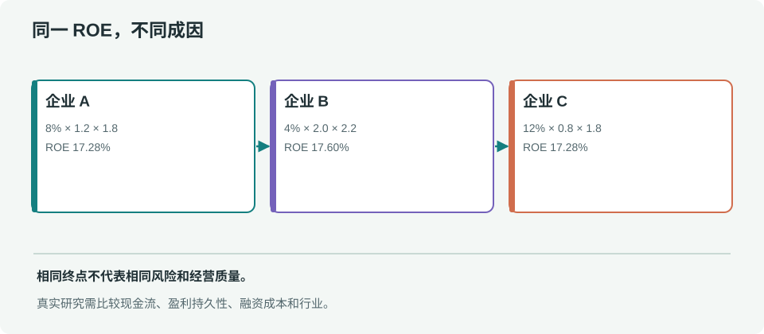
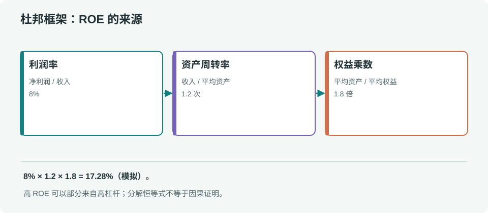

CHAPTER 05 · INVESTMENT RESEARCH
财务比率：ROE 的来源与现金质量
相同的ROE并不意味着相同的经营质量；把盈利、周转、杠杆与现金流连起来，才能识别风险。
高ROE背后可能是好生意，也可能是高杠杆
两家公司 ROE 都在17%左右，一家依靠利润率和稳定现金回款，另一家靠低利润率、高周转和较高财务杠杆。只看ROE的排名，容易把融资结构当成经营优势。财务比率是发现问题的工具，不是替代研究的综合分数。

ROE与ROA的分母必须匹配计量期间
净资产收益率通常将期间净利润与同口径平均权益对应。若公司发行新股、回购、大额派息，简单期末权益可能与全年盈利期间不匹配；还应注意母公司、合并报表和归属于普通股股东的口径差别。
若净利润20万元、平均权益100万元，基础ROE为20%。但如果权益因为损失或大规模分配被压低，高ROE不自动意味着商业模式改善。总资产收益率ROA有助于从另一侧观察资本使用效率，也应注明所用利润口径。
杜邦三因子：利润率、周转率与权益乘数
在统一分子分母的条件下，ROE = 净利润率 × 资产周转率 × 权益乘数。前两个因素与经营效率有关，第三个因素与财务杠杆有关。这是代数恒等式，不能直接当作经济因果模型。

偿债：比率不能替代到期现金流
流动比率是流动资产与流动负债之比，但应收款回收困难、库存滞销、货币资金受限，都能让账面高比率失去意义。负债率和净债务也要结合到期表、融资契约、担保与利息负担。金融企业和一般工商企业的结构差异尤其大。
| 指标 | 简化表达 | 使用边界 |
|---|---|---|
| 流动比率 | 流动资产 / 流动负债 | 资产能否按期变现 |
| 资产负债率 | 负债 / 资产 | 行业、租赁与特殊融资结构 |
| 利息保障倍数 | 息税前利润 / 利息费用 | 利润口径与实际付息现金 |
| 净债务 / EBITDA | （有息债务−可用现金）/ EBITDA | EBITDA不等于可分配现金流 |
没有跨全部行业、市场和经济周期都有效的单一阈值。比率必须与业务模式、信用条款和多期现金流一起阅读。
营运效率：从应收、存货到现金转换周期
应收天数衡量确认收入到收款的大致周期；存货天数体现生产与销售资金占用；应付天数则反映付款给供应商的延后时间。常见近似：现金转换周期CCC ≈ 应收天数 + 存货天数 − 应付天数。
构造一家企业的年收入200万元、年营业成本150万元、平均应收40万元、平均存货30万元、平均应付20万元。按365天估计：应收约73天、存货约73天、应付约48.7天，因此CCC约97.3天。计算使用年化近似，实际应关注季节性、业务结构和平均余额。
缩短CCC不一定全部是好消息：可能来自回款改善，也可能来自压延供应商付款。应结合逾期应付、客户集中度和库存积压排除错觉。
增长率：别让小基数和融资变化制造幻觉
营业收入、净利润、每股收益与经营现金流增长率分别衡量不同事情。利润从1万元增长到4万元，增长率虽为300%，绝对规模依然很小。股本稀释、回购、非经常性收益或会计口径变更也可能令“增长”与持续盈利能力脱节。
较快增长若需要更高营运资本和资本开支，未必能带来等比例的自由现金流。研究者应把增长、利润率、再投资、风险与贴现率同时纳入估值框架。
把指标转化成一份可验证的财务疑点清单
先统一报表期间、主体和会计准则；再把净利润与经营现金流并列；然后检查杜邦三因素、短债到期、应收与库存周转；最后用同行业、相似商业模式公司的多期数据做对照。对每一个异常，写出“若解释成立，应观察到什么”。
| 发现 | 第一步 | 下一步核对 |
|---|---|---|
| ROE高而经营现金流弱 | 利润与CFO差额 | 应收、存货、非现金项目 |
| 收入增长但收款变慢 | 应收天数与客户集中度 | 合同条款、坏账准备和附注 |
| 短债增多但流动比率稳定 | 到期时间与受限现金 | 授信条件、偿债能力与融资成本 |
检查理解
- 净利率6%、资产周转1.5、权益乘数2时，ROE是多少？答案：18%。
- 为什么不能用同一个ROE阈值评价银行和制造企业？
- 应收账款天数上升时，还需要哪些证据才能判断销售质量？
资料来源与适用范围
以下是概念、监管和列报制度的一手参考。数值及图中的公司均为构造案例；真实公司的分析应查原始定期报告与附注。